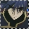
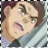
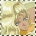
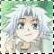
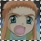
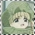

P R I N C E S S & K N I G H T S : C O M P A N I O N SHere's a brief summary of the other knights and Himeno, and Sasame's relationship with them.
HIMENOHimeno is the current Princess Pretear and main character. She's very genki and adorable, yet determined and brave. She's nowhere near perfect, but that's what makes her unique. :D Sasame talks to her a lot in the beginning of the series, educating her and giving her advice on how to use her Pretear abilities. Himeno is very fond of Sasame and has come to respect him as much as the others do.

HAYATEHayate is the Knight of Wind and he's rather quiet, keeps to himself and does things his own way. He's one of those Tamahome (FY) and Touya (AyC) characters who are very independent and always collected. He is one of the older and more experienced Liefe Knights along with Sasame, and he falls in love with Himeno, blushing whenever she was close to him. XD He and Sasame are very close friends and they understand each other well.

GOHGoh is the Knight of Fire and he's pretty normal, understanding and nice. He works as a waiter at a restaurant and Himeno and co. come to him all the time, hoping to get free dibs. XD His character is not very well expressed, so there's little we know about him. He also respects Sasame and cooresponds well with him.

KEIKei is the Knight of Light, he's also very pleasant and considerate of others. He is an expert at computers and can predict where the Mayouchuu will attack next. He's also very truthful and isn't afraid to tell Himeno and the kids the truth about Saihi, whereas the others were more hesitant. His relationship with Sasame is also vague, they have an understanding and respect each other.

MANNENMannen is a cute one.^_^ He's one of the younger Liefe Knights, but he gets mad if he's ever called a 'kid.' He always wants to do the "adult" jobs as Liefe Knights, but always end up looking after Himeno or saving the townspeople from danger along with the rest of the young Liefe Knights. He's pretty strong-willed though, although a little egotistic.^_^ He is the Knight of Ice.

HAJIME>.< Hajime's character's not portrayed very thorough either. He's the Knight of Water and he's pretty mature for his age. He hangs around with Mannen and Shin a lot, and doesn't complain at all. He looks up to Sasame and the older Liefe Knights and does what he's told. A sweet and obedient kid :)

SHINShin. Is. The. Cutest. Kid. On. Earth. My goodness, his seiyuu is adorable sounding, which makes him even more kawaii.^_^ He's the Knight of Plants and he has all sorts of little powers that are really essential to the knights. He has this shield that will create a battle field apart from the human world to prevent humans from getting hurt when they're battling. He also has this seal that will seal an underdeveloped Mayouchuu. He's such a cutie! :D
-----------------------------------------
Broken Echo is an AinoyumeNET production. Pretear was created by Kaori Naruse and Junichi Sato, © 2001. All rights reserved.